MWordStar 是一套简洁的 Typecho 双栏博客主题，也是 我的博客 之前使用的主题。主题免费开源，可以在 Github 上免费下载。
主题下载地址：https://github.com/changbin1997/MWordStar/releases
如果你无法打开上面的下载地址，也可以访问 https://pan.baidu.com/s/1uFlFkcEeZsSgNy4OKPm6vw 使用百度网盘下载，密码 bcjh ，进入博客主图下载文件夹后选择 MWordStar 的最高版本下载。
主题演示地址：https://changbin1997.github.io/MWordStar/web/
主题演示站只是静态页面，不能发评论和点赞。
主题使用说明：https://mwordstar.misterma.com/
下面是主题首页截图：
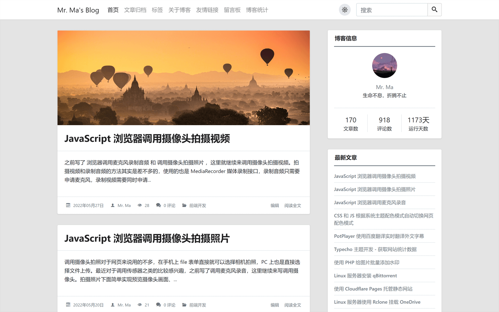
主题元素包含圆角和直角两种风格，您可以根据喜好在主题外观设置中切换，下面是直角风格的首页截图：
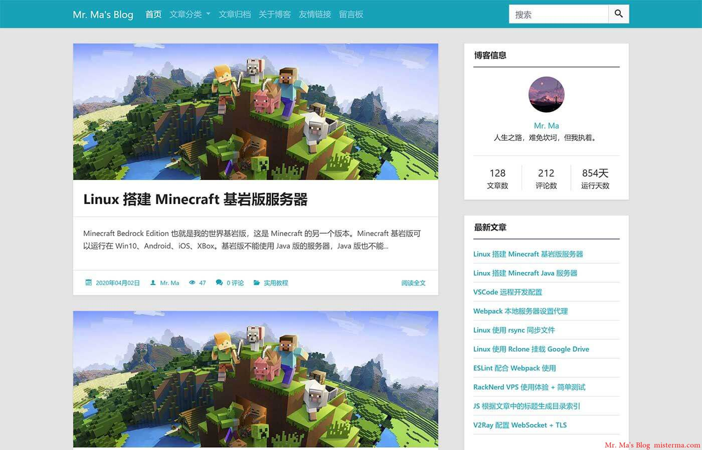
小头图模式：
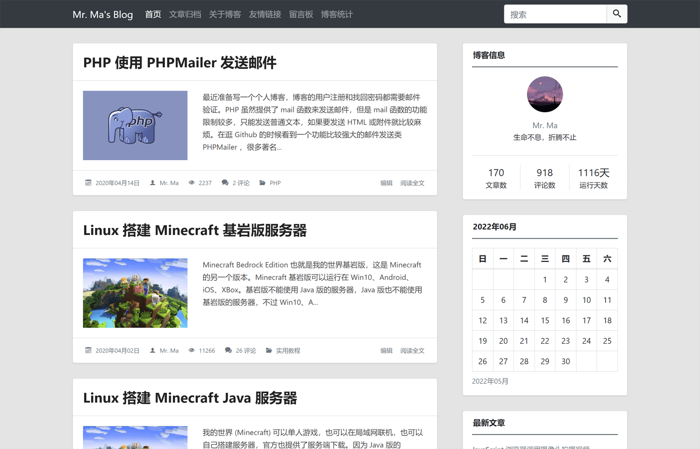
也可以给文章设置单独的头图样式：
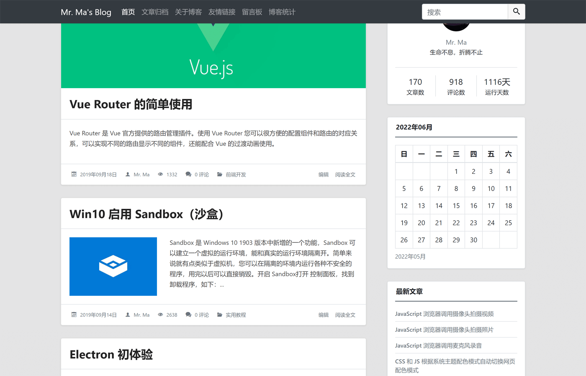
深色模式：
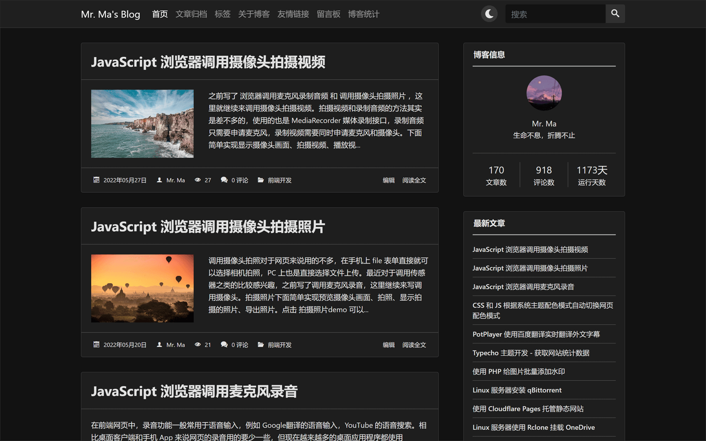
MWordStar 目前包含 6 套配色：
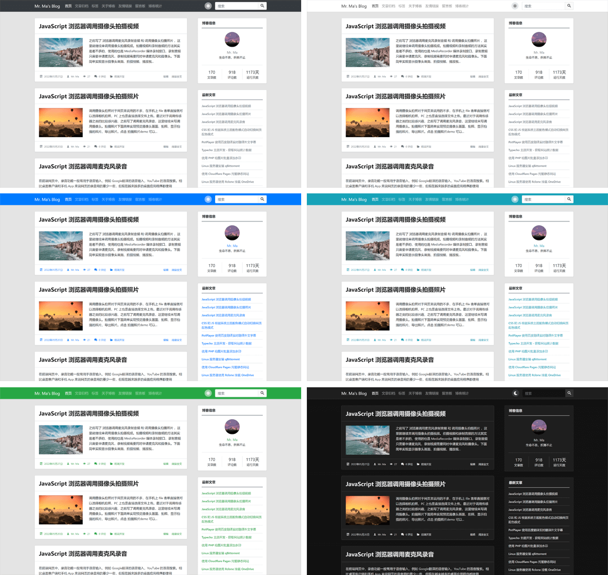
特点和功能
- 响应式设计
- 无障碍适配（Accessibility）
- 6 种不同风格的配色
- 两种不同风格的元素
- 多套自定义页面模板
- 代码高亮
- 丰富的设置选项
- 良好的 SEO 优化
- 自带点赞功能
- 丰富的侧边栏组件
- 详细的图表统计
- 评论区自带 Emoji 表情面板
- 可以自动根据文章中的标题生成章节目录
- 长期维护
- 详细的 使用说明（必看）
主题介绍
外观设计
因为我个人比较喜欢两栏布局，所以这个主题也使用了两栏布局的设计。
主题依赖
主题主要用到了一下几个库和框架：
- Bootstrap 外观和布局
- jQuery Bootstrap 依赖
- jquery-qrcode 一个生成二维码的 jQuery 插件
- highlight.js 代码高亮
- IcoMoon 字体图标
其中 IcoMoon 的字体图标是可定制的，所以只包含了主题中出现的图标，字体图标的文件体积也很小。
主题的静态文件没有使用任何 CDN 地址，所有文件都放在主题的 assets 目录中。主题的生成目录、点赞、快速分享 之类的功能都是自己手动编写的，所以用到的 JS 库也比较少。
使用 Webpack 打包的版本前台只需要加载一个 CSS 和 一个 JS 文件，所有 JS 库都打包到了 JS 中，所有 CSS 和字体图标都打包到了 CSS 中。因为用到的库比较少，而且字体图标和部分组件都是按需引入的，所以打包后的 CSS 和 JS 也比较小。
主题安装
把主题上传到 Typecho 的 usr/themes/ 目录，然后解压，你也可以先解压在上传。
解压后需要保证 themes 目录下 有一个 MWordStar 目录。
登录 Typecho 的后台管理，进入 控制台 -> 外观，如果看到 MWordStar 就点击 启用。
代码高亮
代码高亮目前包含三套主题配色，分别是 Stack Overflow（浅色）、VS2015（深色）、Sunburst（高对比度）。主题支持 30 多种语言的代码高亮，详细的语言支持列表和说明可以查看 使用说明 。
友情链接
友情链接分为 全站友情链接、首页友情链接、内页友情链接。全站友情链接 会在每个页面的侧边栏显示，首页友情链接 会在首页的侧边栏显示，内页友情链接 只会在 友情链接 的页面显示。
如需查看友情链接的设置说明可以访问：使用说明 。
文章头图
文章头图可以在 首页、文章页、侧边栏 显示，您可以根据需求在主题外观设置中设置。文章头图来源支持自动获取文章的第一张图片和手动输入图片 URL。
侧边栏
下面是目前可以显示在侧边栏的组件：
- 博客信息
- 搜索
- 最新文章
- 最新评论
- 文章分类
- 标签云
- 日历归档
- 按月份的文章归档
- 登录入口和 RSS
- 友情链接
侧边栏的每个组件您都可以选择开启或关闭，您还可以自定义侧边栏的组件排序顺序。
无障碍（Accessibility）
上网对于大多数人来说是一件再简单不过的事，但是对于一些身体有缺陷的残障人士来说却是一件非常困难的事。
目前国内的很多网站都只注重外观，忽略了残障人士的可访问性。但是想要做好网站的用户体验，无障碍 适配肯定是少不了的。
主题针对屏幕阅读器做了大量优化，并 在 NVDA 和 VoiceOver 这两款屏幕阅读器上做过测试，无论是 PC 还是移动设备都能完美朗读。主题能准确传达需要朗读的内容和信息，对于盲人来说，使用标准的屏幕阅读器基本可以无障碍操作。
主题可完美支持键盘访问，颜色对比度也符合标准。
小提示：如果您是屏幕阅读器用户，为了您的浏览体验，不建议使用 IE 浏览器。
Emoji 表情
主题评论区包含一个 Emoji 表情面板，您可以在后台启用或禁用。Emoji 表情面板包含 1466 个表情，这些表情都是按照分类动态加载的，您不用担心性能问题。
Emoji 表情面板也进行了无障碍适配，可支持键盘访问和屏幕阅读器朗读。
下面是 Emoji 表情面板的截图：
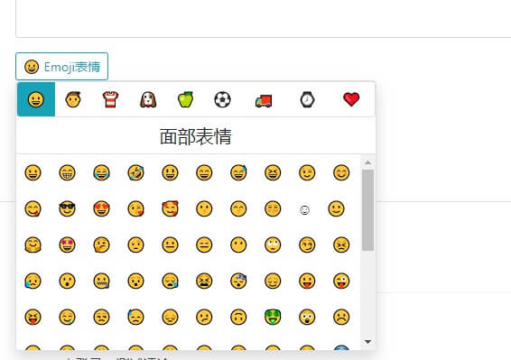
统计页
主题包含一个统计页模板，您可以在后台创建页面，页面的自定义模板选择 网站数据，标题可以随便写，创建完成后就可以在顶部导航栏访问了。
统计页包含基本的数据统计、分类文章占比图、文章更新日历图、评论动态日历图、阅读量排名前 5 的文章、评论量排名前 5 的文章。
基本数据统计如下：
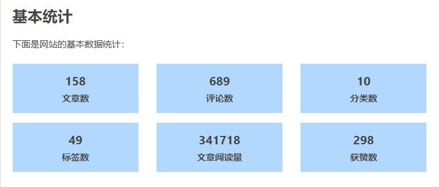
分类占比统计图如下：
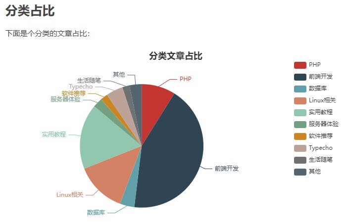
下面是评论动态日历图：
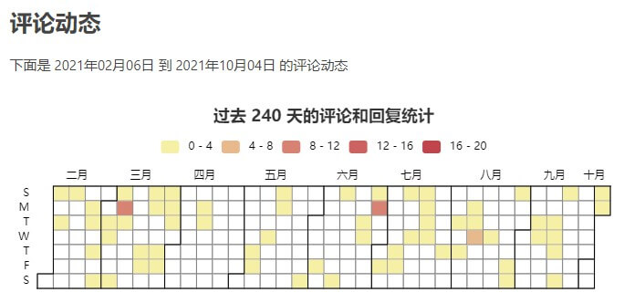
文章动态日历图和评论动态的日历图是差不多的，屏幕尺寸不同显示的月份数量也不同。
下面是文章评论排名表格：
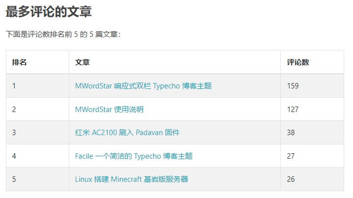
文章阅读量排名表格和评论量排名的表格也是差不多的。
统计页面效果可以参考 https://www.misterma.com/data.html ，也可以直接访问 MWordStar 的静态演示站。
兼容性
主题使用了少量的 CSS3，浏览器需要达到 IE10 才能完美兼容，IE8 和 9 也能使用，但是有些页面的显示 例如代码高亮和时间线显示可能会出现稍微偏移的情况。
插件适配
因为本人很少使用插件，所以目前适配的插件比较少。
下面是已适配的插件：
- Sticky 文章置顶插件
已适配的插件不需要到 PHP 文件中添加插件代码，没有适配的插件可能需要按照插件说明到 PHP 文件中添加相应的插件代码。
其它
主题 Github：https://github.com/changbin1997/MWordStar
主题使用 MIT License 开源。
如果您在使用这个主题时遇到 Bug 或有任何问题和建议都可以在 博客评论区 留言，也可以在 Github 的 issues 反馈。


可以可以
呵呵呵呵